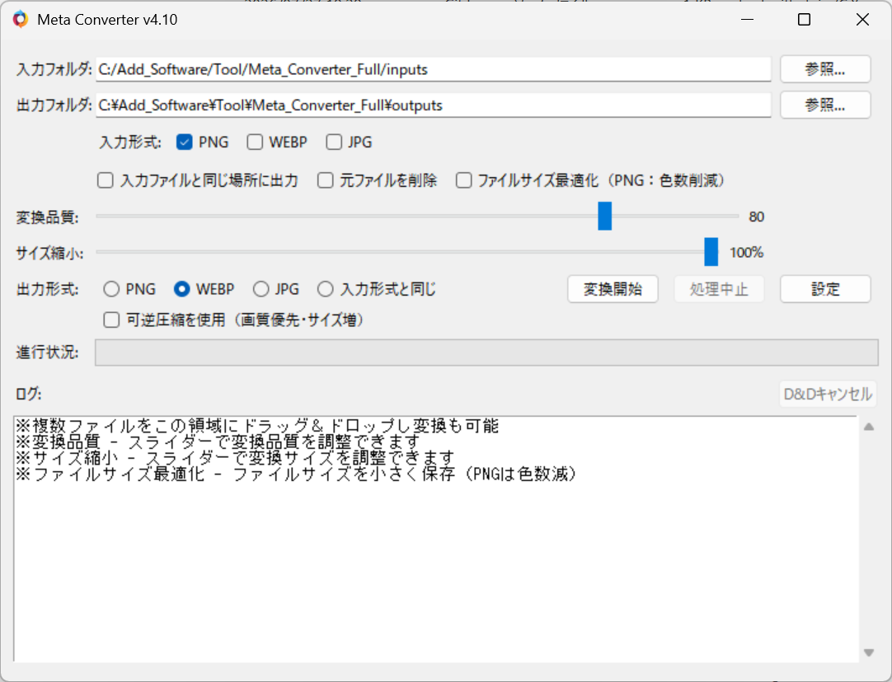

生成情報を残して変換
変換後も、WebUIで生成情報を読み込めます。
- メタデータを維持して変換PNG / WebP / JPEG → PNG / WebP / JPEG。入力と同じ形式での出力も可能
- WebUIへの取り込み変換した画像は、WebUIのPNG Infoに読み込み可能
Meta Converter
メタデータ維持画像変換
AI画像の生成情報（メタデータ）を保持したまま、PNG・JPEG・WebPへ一括変換。PNGからJPEGへの変換でファイルサイズを最大約1/10に抑えつつ、変換後もWebUIのPNG Infoで読み込めます。Eagleのライブラリにも対応したWindows向けツールです。
体験版：1回8枚まで
v4.10 公開 2026.09.13
クリックで拡大
01 できること
一般的な画像変換では消えてしまうことの多いAI画像の生成情報を保ったまま、形式の変換やファイルサイズの削減ができます。
変換後も、WebUIで生成情報を読み込めます。
保存容量や共有の負担を減らせます。
フォルダ単位で、大量の画像も一度に。
ComfyUIとNovelAIの画像をJPEGへ変換する場合は、生成情報を別のファイルとして出力します。
Eagleについては、Eagle公式サイト ↗をご覧ください。
02 使い方
画像の入ったフォルダを選択、または画像・フォルダをドラッグ＆ドロップ。
変換形式や変換品質などを設定。
「変換開始」で一括変換を実行。
03 動作環境
04 体験版・購入
Meta Converter / Windows
v4.10 · ZIPファイル
ご希望の購入方法をお選びください。
個人での商用利用は、本製品の購入で利用可能です。
企業での商用利用は、メールでご相談ください。